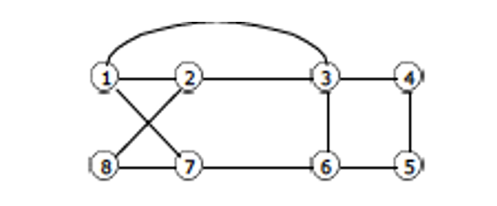
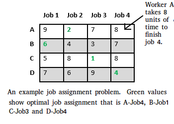
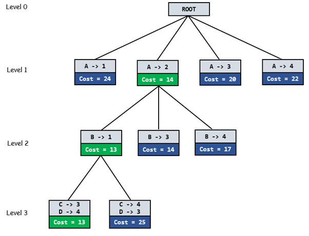
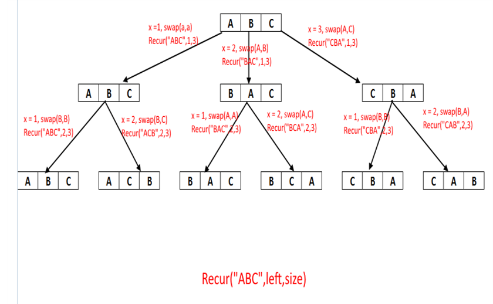

<HTML>
	<HEAD>
		<TITLE>Design And Analysis Of Algorithms</TITLE>
	</HEAD>
		<meta charset="utf-8">
<meta name="viewport" content="width=device-width, initial-scale=1">
<style>
* {
  box-sizing: border-box;
}

body {
  font-family: Arial, Helvetica, sans-serif;
}

header {
  background-color: #666;
  padding: 20px;
  text-align: center;
  font-size: 35px;
  color: white;
  height: 250px;
}

nav {
  float: left;
  width: 35%;
  height: 5735px; 
  background: #ccc;
  font-size: 40px;
  padding: 20px;
}

nav ul {
  list-style-type: none;
  padding: 0;
}

article {
  float: left;
  padding: 20px;
  width: 65%;
  background-color: #f1f1f1;
  height: 5735px; 
}

section:after {
  content: "";
  display: table;
  clear: both;
}

footer {
  background-color: black;
  padding: 30px;
  text-align: center;
  color: white;
}

@media (max-width: 600px) {
  nav, article {
    width: 100%;
    height: auto;
  }
}
#myBtn {
  display: none;
  position: fixed;
  bottom: 20px;
  right: 30px;
  z-index: 99;
  font-size: 18px;
  border: none;
  outline: none;
  background-color: red;
  color: white;
  cursor: pointer;
  padding: 15px;
  border-radius: 4px;
}

#myBtn:hover {
  background-color: #555;
}
a {
  text-decoration: none;
  display: inline-block;
  padding: 8px 16px;
}

.previous {
  background-color: white;
  color: black;
}

.next {
  background-color: white;
  color: black;
}

.round {
  border-radius: 50%;
}
a:link {
  color: red;
}

/* visited link */
a:visited {
  color: #604fbf;
}

/* mouse over link */
a:hover {
  color: #66cc00;
}

/* selected link */
a:active {
  color: blue;
}
.pagination {
  display: inline-block;
}

.pagination a {
  color: white;
  float: left;
  padding: 8px 16px;
  text-decoration: none;
  background-color: #0047b3;
}
.pagination a {
  border: 1px solid #80aaff; 
}
.pagination a {
  margin: 0 4px; /* 0 is for top and bottom. Feel free to change it */
}
.pagination a.active {
  background-color: #4CAF50;
  color: white;
}

.pagination a:hover:not(.active) {background-color: #ddd;}
</style>
</head>
<body bgcolor="#e6f0ff">

<header>			<br>
			<CENTER>	<u><h1>UNIT-4 -- BACKTRACKING - BRANCH & BOUND</h1></u></CENTER>
</header>

<section>
  <nav>
    <ul">List of topics in U4-
      <li><a href="#s1">N*N Queen Problem</a>
      <li><a href="#s2">Hamiltonian Circuit</a>
      <li><a href="#s3">Branch & Bound</a>
	  <li><a href="#s4">Subset Sum</a>
	  <li><a href="#s5">DFS & BFS</a>
	  <li><a href="#s6">Generating Permutations</a>
    </ul>
  </nav>
  <article>
 <center>
	 <div class="pagination">
  <a href="F3.html">&laquo;</a>
  <a href="HOME PAGE.html">Home</a>
  <a href="F1.html">U1</a>
  <a href="F2.html">U2</a>
  <a href="F3.html">U3</a>
  <a href="F4.html" class="active">U4</a>
  <a href="F5.html">U5</a>
  <a href="F5.html">&raquo;</a>
</div></center>
			<p id="s1"><h3>N*N Queen Problem:</h3></p>
			<center></center>
			<p> Consider n by n chess board, and the problem of placing n queens on the board without the queens threatening one another. <br>
					The solution space is {1, 2, 3, , n}n. The backtracking algorithm may record the columns where the different queens are positioned. <br>
					Trying all vectors (p1, ..., pn) implies cases. Noticing that all the queens must reside in different columns reduces the number of cases to n!.<br>
		<br><b>	Algorithm place (k,I) </b><br>
				//return true if a queen can be placed in k th row and I th column. otherwise it returns false. <br>
					//X[] is a global array whose first k-1 values have been set. Abs® returns the absolute value of r.<br> 
						For j=1 to k-1 do <br>
							If ((X [j]=I) Or (abs (X [j]-I)=Abs (j-k))) <br>
								//two in same column or diagonal <br>
									Then return false; <br>
										Return true;<br>
			<br><b>Algorithm Nqueen (k,n)</b><br>
			//using backtracking it prints all possible positions of n queens in „n*n‟ chessboard. So <br>
				//that they are non-tracking. <br>
					For I=1 to n do 	<br>
						If place (k,I) then<br> 
							X [k]=I; <br>
								If (k=n) then <br>
									write (X [1:n]); <br>
										Else nqueens(k+1,n) ;<br>
			</p>
			<p id="s2"><h3>Hamiltonian Circuit</h3></p>
			<p> Let G=(V,E) be a connected graph with n vertices. 
				A HAMILTONIAN CYCLE is a round trip path along n edges of G which every vertex once and returns to its starting position. 
				If the Hamiltonian cycle begins at some vertex V1 belongs to G and the vertex are visited in the order of V1,V2…….Vn+1,then 
				the edges are in E, 1&lt=i&lt=n and the Vi are distinct except V1 and Vn+1 which are equal. <br>
				<center></center><br>
				<b>Consider an example graph G1.</b><br>
				The graph G1 has Hamiltonian cycles: <br>
					1,3,4,5,6,7,8,2,1<br>
					1,2,8,7,6,5,4,3,1. <br><br>
				<b>Algorithm Hamiltonian (k)</b><br>
				Loop <br>
					Next value (k) <br>
						If (x (k)=0) then return; <br>
							If k=n then Print (x) <br>
								Else Hamiltonian (k+1); <br>
									End if <br>
										Repeat <br>
										<b>Backtracking algorithm-</b><br>
									Iterate over the string one character at a time. <br>
									1. Fix a character at the first position and the use swap to put every character at the first position<br>
									2. Make recursive call to rest of the characters.<br>
									3. Use swap to revert the string back to its original form for next iteration.<br>
										Time Complexity: O(n*n!)<br>

			</p>
			<p id="s3"><h3>Branch & Bound</h3></p>
			<p> Branch and bound is an algorithm design paradigm which is generally used for solving combinatorial optimization problems. 
			These problems are typically exponential in terms of time complexity and may require exploring all possible permutations in worst case. 
			The Branch and Bound Algorithm technique solves these problems relatively quickly.<br><br>
			<b>Let us consider the following problem-</b><br><br>
			<b>Job Assignment Problem using Branch And Bound</b><br>
			<center>
			 <br><br> </center>
			<br><br>
			<b>Algorithm-</b><br>
			Procedure Expand(E)<br>
begin<br>
   /* Generate all the children of E; */<br>
   I := E->I;<br>
   X,p: nodepointer;<br>
   S[1:n]: Boolean; <br>
   /* S is a bitmap set initialized to 0*/<br>
   /* S will contain all the jobs that have been<br>
      assigned by the partial path from the root <br>
      to E */<br>
   p := E;<br>
   while (p is not the root) do<br>
      S[p->J] := 1;<br>
      p := p-> Parent;<br>
   endwhile<br>
   for job=1 to n do<br>
      if S[job] = 0 then<br>
         X := new(node);<br>
         X->I := I + 1;<br>
         X->J := job;<br>
         X->Parent := E;<br>
         X->CC := E->CC + AX->I,X->J-mX->I;<br>
         Insert(X,H);<br>
      endif<br>
   endfor<br>
end<br>
			</center>
			</p>
			<p id="s4"><h3>Subset Sum</h3></p>
			<p>Subset sum problem is to find subset of elements that are selected from a given set whose sum adds up to a given number K. 
			We are considering the set contains non-negative values. 
			It is assumed that the input set is unique (no duplicates are presented).<br>
			<b>Pseudo Code-</b><br><br>
			<center></center><br><br>
			if(subset is satisfying the constraint)<br>
   					 print the subset<br>
    					exclude the current element and consider next element<br>
				else<br>
  			  generate the nodes of present level along breadth of tree and<br>
  			  recur for next levels<br>
			</p>
			<p id="s5"><h3>Depth First Search & Breadth First Search</h3></p>
			<p> <b>Depth First Search-</b><br>
			Depth First Traversal (or Search) for a graph is similar to Depth First Traversal of a tree. The only catch here is, 
			unlike trees, graphs may contain cycles, so we may come to the same node again. 
			To avoid processing a node more than once, we use a boolean visited array.
			Following are the problems that use DFS as a building block.<br>

1) For a weighted graph, DFS traversal of the graph produces the minimum spanning tree and all pair shortest path tree.<br>

2) Detecting cycle in a graph<br>
A graph has cycle if and only if we see a back edge during DFS. So we can run DFS for the graph and check for back edges. <br>

3) Path Finding<br>
We can specialize the DFS algorithm to find a path between two given vertices u and z.<br>
i) Call DFS(G, u) with u as the start vertex.<br>
ii) Use a stack S to keep track of the path between the start vertex and the current vertex.<br>
iii) As soon as destination vertex z is encountered, return the path as the
contents of the stack<br>

4) Topological Sorting<br>
Topological Sorting is mainly used for scheduling jobs from the given dependencies among jobs. In computer science, applications of this type arise in instruction scheduling, 
ordering of formula cell evaluation when recomputing formula values in spreadsheets, logic synthesis, determining the order of compilation tasks to perform in makefiles, 
data serialization, and resolving symbol dependencies in linkers.<br>

5) To test if a graph is bipartite<br>
We can augment either BFS or DFS when we first discover a new vertex, color it opposited its parents, and for each other edge, check it doesn’t link two vertices of 
the same color. The first vertex in any connected component can be red or black! See this for details.<br>

6) Finding Strongly Connected Components of a graph A directed graph is called strongly connected if there is a path from each vertex in the graph to every other vertex. <br>

7) Solving puzzles with only one solution, such as mazes. (DFS can be adapted to find all solutions to a maze by only including nodes on the current path in the visited set).<br>
			<br><b>Breadth First Search-</b><br>
			Breadth First Traversal (or Search) for a graph is similar to Breadth First Traversal of a tree (See method 2 of this post). 
			The only catch here is, unlike trees, graphs may contain cycles, so we may come to the same node again. To avoid processing a 
			node more than once, we use a boolean visited array. 
			For simplicity, it is assumed that all vertices are reachable from the starting vertex.<br>
			1) Shortest Path and Minimum Spanning Tree for unweighted graph In an unweighted graph, 
			the shortest path is the path with least number of edges. With Breadth First, we always 
			reach a vertex from given source using the minimum number of edges. Also, in case of unweighted 
			graphs, any spanning tree is Minimum Spanning Tree and we can use either Depth or Breadth first 
			traversal for finding a spanning tree.<br>

			2) Peer to Peer Networks. In Peer to Peer Networks like BitTorrent, Breadth First Search is used to find all neighbor nodes.<br>
		
			3) Crawlers in Search Engines: Crawlers build index using Breadth First. The idea is to start from source page and follow all 
			links from source and keep doing same. Depth First Traversal can also be used for crawlers, but the advantage with Breadth First 
			Traversal is, depth or levels of the built tree can be limited.<br>

			4) Social Networking Websites: In social networks, we can find people within a given distance ‘k’ from a person using Breadth First Search till ‘k’ levels.<br>

			5) GPS Navigation systems: Breadth First Search is used to find all neighboring locations.<br>

			6) Broadcasting in Network: In networks, a broadcasted packet follows Breadth First Search to reach all nodes.<br>

			7) In Garbage Collection: Breadth First Search is used in copying garbage collection using Cheney’s algorithm. Refer this and for 
			details. Breadth First Search is preferred over Depth First Search because of better locality of reference.<br>

			8) Cycle detection in undirected graph: In undirected graphs, either Breadth First Search or Depth First Search can be used to 
			detect cycle. We can use BFS to detect cycle in a directed graph also.<br>

			9) Ford–Fulkerson algorithm In Ford-Fulkerson algorithm, we can either use Breadth First or Depth First Traversal to find the 
			maximum flow. Breadth First Traversal is preferred as it reduces worst case time complexity to O(VE2).<br>

			10) To test if a graph is Bipartite We can either use Breadth First or Depth First Traversal.<br>

			11) Path Finding We can either use Breadth First or Depth First Traversal to find if there is a path between two vertices.<br>

			12) Finding all nodes within one connected component: We can either use Breadth First or Depth First Traversal to find all nodes reachable from a given node.<br>
			</p>
			<p id="s6"><h3>Generating Permutations</h3></p>
			<p> A permutation is a rearrangement of the elements in a list. A string/array of length n has n! permutation.<br>
			Input:<br>
			An array // [’A’, ‘B’, ‘C’]<br>
			Out­put:<br>
			[’A’, ‘B’, ‘C’] [’A’, ‘C’, ‘B’], [’B’, ‘A’, ‘C’], [’B’, ‘C’, ‘A’], [’C’, ‘A’, ‘B’], [’C’, ‘B’, ‘A’]<br>
			OR<br>			ABC, ACB, BAC, BCA, CAB, CBA<br>
			<center></center>
 			</p>
			<p><h2>Some important links:</h2>
N*N Queen Problem- <a href="https://youtu.be/0DeznFqrgAI">https://youtu.be/0DeznFqrgAI</a><br>
Hamiltonian Circuit- <a href="https://youtu.be/SjtVuw4-1Qo">https://youtu.be/SjtVuw4-1Qo</a><br>
Subset Sum- <a href="https://youtu.be/kyLxTdsT8ws">https://youtu.be/kyLxTdsT8ws</a><br>
DFS- <a href="https://youtu.be/s-CYnVz-uh4">https://youtu.be/s-CYnVz-uh4</a><br>
BFS- <a href="https://youtu.be/AfSk24UTFS8">https://youtu.be/AfSk24UTFS8</a><br>
Graph Traversal- <a href="https://youtu.be/zaBhtODEL0w">https://youtu.be/zaBhtODEL0w</a>
</p>

				<button onclick="topFunction()" id="myBtn" title="Go to top">Top</button>
							<script>
//Get the button
var mybutton = document.getElementById("myBtn");

// When the user scrolls down 20px from the top of the document, show the button
window.onscroll = function() {scrollFunction()};

function scrollFunction() {
  if (document.body.scrollTop > 20 || document.documentElement.scrollTop > 20) {
    mybutton.style.display = "block";
  } else {
    mybutton.style.display = "none";
  }
}

// When the user clicks on the button, scroll to the top of the document
function topFunction() {
  document.body.scrollTop = 0;
  document.documentElement.scrollTop = 0;
}
</script>
  </article>
</section>

<footer>
  <p><a href="HOME PAGE.html">HOME PAGE</a></p>
  <b><u><center> <p>That was all about UNIT-4: Backtracking - Branch & Bound.</p></center></u></b>
  <a href="F3.html" class="previous">&laquo; Previous</a>
<a href="F5.html" class="next">Next &raquo;</a>
</footer>

</body>
</html>